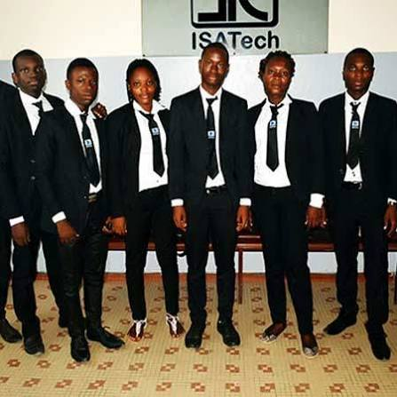
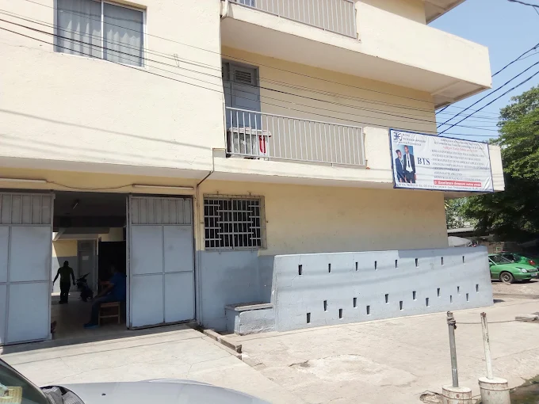

Construisez les compétences qui façonnent votre avenir.
Établissement d'enseignement supérieur à Abidjan-Koumassi, agréé par l'État.

de 20 ans
Plus qu'une formation, un parcours vers l'emploi.
Créé le 06 septembre 2001 à Abidjan, dans la commune de Koumassi, l'Institut des Sciences Appliquées et de la Technologie forme les techniciens supérieurs et cadres de demain.
Discipline, tenue réglementaire, encadrement de proximité et pratique professionnelle : nos étudiants sont préparés aux exigences réelles des entreprises.
- Agréé par l'ÉtatHabilité par le FDFP, BTS d'État
- Encadrement procheSuivi individuel des étudiants
- Salles équipéesInformatique et réseaux
- Stages en entrepriseInsertion professionnelle
Des filières tournées vers l'emploi
Brevet de Technicien Supérieur d'État en 2 ans, avec stage en entreprise.
Actualités & informations
ISATech en images
Le quotidien de nos étudiants : cours, tenue officielle, cérémonies et vie de l'école.
Inscriptions 2026-2027 ouvertes
Rejoignez plus de 2000+ diplômés. Le secrétariat vous accueille à Koumassi.
Notre histoire & notre mission
Institut des Sciences Appliquées et de la Technologie — fondé le 06 septembre 2001 à Abidjan-Koumassi.
Deux décennies au service de la jeunesse ivoirienne.
Créé le 06 septembre 2001 au cœur de Koumassi, ISATech est né de la volonté de son Fondateur de donner aux jeunes une formation supérieure solide, axée sur l'application concrète des sciences, de la gestion et des technologies.
Établissement agréé par l'État et habilité par le FDFP, l'école a formé 2000+ diplômés aujourd'hui en activité dans les entreprises, cabinets, sociétés de télécoms et administrations de Côte d'Ivoire.

Une référence de l'enseignement supérieur appliqué
Former des diplômés directement opérationnels, éthiques et méthodiques, moteurs des transformations technologiques et managériales de leurs entreprises.
Former, encadrer, insérer
Offrir une formation rigoureuse alliant savoirs fondamentaux, pratique professionnelle et savoir-être, pour une insertion rapide sur le marché de l'emploi.
Ce qui nous définit
Excellence
Exigence de qualité pédagogique et de rigueur intellectuelle dans tous nos enseignements.
Discipline
Assiduité, ponctualité, tenue réglementaire et respect des règles de vie commune.
Innovation
Des programmes adaptés aux évolutions des technologies et aux besoins des entreprises.
Professionnalisme
Une posture professionnelle dès le premier jour : expression, rigueur et esprit d'équipe.
Responsabilité
L'engagement de nos étudiants au service du développement de la Côte d'Ivoire.
Intégrité
Honnêteté, transparence et respect mutuel entre étudiants et enseignants.
Organigramme
Du Fondateur au corps enseignant, une équipe au service de la réussite des étudiants.
Nos filières BTS d'État
Des formations de 2 ans en 4 semestres, mêlant cours, travaux pratiques et stage en entreprise.
Votre avenir commence ici.
Étapes d'inscription, pièces à fournir et réponses à vos questions.
S'inscrire en 6 étapes
Choisir sa filière
Consultez nos formations et choisissez le parcours adapté à votre projet professionnel.
Vérifier les conditions
Être titulaire du Baccalauréat (séries selon la filière) ou d'un diplôme reconnu équivalent.
Préparer son dossier
Rassemblez les pièces listées ci-dessous.
Déposer le dossier
Présentez-vous au secrétariat d'ISATech à Koumassi avec votre dossier complet.
Entretien d'orientation
Un échange avec l'équipe pédagogique pour valider votre choix de filière.
Finaliser l'inscription
Réglez les frais d'inscription et recevez la confirmation de votre admission.
Pièces à fournir
- Copie de la pièce d'identité (CNI, passeport ou attestation d'identité)
- Copie légalisée de l'attestation de réussite ou du diplôme du Baccalauréat
- Copie du relevé de notes du Baccalauréat
- Deux photos d'identité récentes (fond blanc)
- Extrait d'acte de naissance ou jugement supplétif
Nos filières
Questions fréquentes
Quel diplôme prépare ISATech ?
Les étudiants étrangers sont-ils acceptés ?
Peut-on s'inscrire avant les résultats du Bac ?
Comment se règlent les frais de scolarité ?
La tenue est-elle obligatoire ?
Une question sur votre inscription ?
Le secrétariat vous répond — Lundi au vendredi : 07h30 - 17h30.
Actualités & informations
Communiqués, informations pratiques et nouvelles de l'établissement.
Infos & communiqués
Actualités scolaires
ISATech en images
Cours, tenue officielle, locaux, cérémonies et activités : découvrez le quotidien de l'école.
Parlons de votre projet
Notre équipe vous accueille et vous oriente du lundi au vendredi à Koumassi.